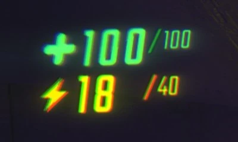

Jugador
Acerca del jugador

Los jugadores aparecen como robots con forma de píldora y dos ojos pequeños y brillantes, conocidos como Semibots.
El jugador puede elegir un color para su Semibot en la pantalla de inicio o desde el menú de escape del juego. Inicialmente, los jugadores tienen 100 de salud y 40 de resistencia. Ambas estadísticas se pueden mejorar con mejoras compradas en la estación de servicio.
Los Semibots tienen una animación para abrir la boca cuando el jugador habla (a través del chat de voz o texto a voz) y enfocan automáticamente sus ojos en ciertos objetos.
Cuando un jugador se queda completamente sin salud y muere, el Semibot se ilumina de un rojo brillante y explota, volando en pequeños pedazos y dejando atrás su cabeza, que ahora tiene los ojos negros.
Un jugador puede revivir si deja caer su cabeza en un Punto de Extracción (los ojos parpadearán en verde para indicar la ubicación correcta) junto con objetos valiosos. También revivirá y recibirá 25 de salud si lleva la cabeza a la salida después de cerrar el último punto de extracción, aunque esto solo funcionará una vez por nivel.

Personalización
Bandera
Los jugadores pueden cambiar el color de su Semibot, desde los tonos más brillantes hasta los más oscuros. Actualmente hay 36 colores disponibles en el juego.
Corona
Después de ganar una batalla en Arena de eliminación, que sigue a una cuota de nivelación fallida, el jugador puede recibir una corona para usar en su cabeza hasta la próxima batalla.
Talento
Los semibots pueden agarrar y levantar objetos de peso moderado a una distancia considerable, incluso sin mejoras de alcance ni de fuerza. Con suficientes mejoras de fuerza (lo que se conoce como "Punto límite de fuerza" en las páginas de cada monstruo), incluso podrás agarrar y levantar monstruos, lo cual puede ser una forma muy efectiva de combatir a muchos de ellos. Agarrar a otro jugador por detrás también te permitirá transferirle una pequeña cantidad de salud, en incrementos de 10.
Además, tu Semibot colapsará telescópicamente cuando te agaches, lo que lo hará más corto de lo normal y podrá caber fácilmente debajo de objetos bastante bajos para esconderse de la mayoría de los monstruos del juego.
Al presionar Q, puedes hacer "Tumble", lo que básicamente te convierte en un muñeco de trapo (que también ocurre cuando estás aturdido). En este estado, otros jugadores pueden levantarte fácilmente, aunque puedes resistirte girándote en su dirección y presionando la barra espaciadora para que ellos también se arrollen. Hacer "Tumble" durante un salto en carrera te permite lanzarte hacia adelante, lo que puede infligir 15 de daño a los enemigos al contacto y 5 de daño a ti. Además, con mejoras, puede volverse más fuerte, convirtiéndose en una excelente manera de recorrer grandes distancias rápidamente. El lanzamiento con "Tumble" puede aturdir a enemigos pequeños. Las mejoras no aumentan el daño.
Consejos
- Al presionar Tab , puedes ver el mapa de la ubicación, la cantidad de jugadores vivos (si se ha comprado una mejora especial) y la lista de mejoras compradas.
-
Además, los jugadores pueden usar la función de chat (que se abre al presionar T ) para comunicarse.
Al hacerlo, el mensaje escrito se lee con una voz robótica.
- Si escribes “ /cinematic”, la interfaz de usuario se volverá invisible y tu personaje comenzará a caminar con mucha suavidad.
-
Si escribes “ /greenscreen”, aparecerá un chromakey verde frente a ti, capturando los
objetos más cercanos a ti (los demás jugadores no podrán verlo).
- Si escribe “ /bluescreen”, aparece el mismo chromakey, pero en color azul.
-
El chat utiliza formato de texto HTML, por lo que cualquier formato de tipo que utilice <>
cambiará la forma en que aparece el texto en el juego.
- Los ejemplos incluyen , ,
- Los ejemplos incluyen , ,
- El tono de la voz depende del ángulo de tono del intérprete (mirar hacia arriba = voz aguda, mirar hacia abajo = voz grave).
- Agacharse mientras se utiliza la función de chat hace que la voz susurre.